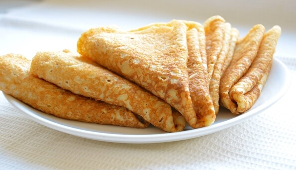

Блины на молоке 2023

Каждый народ имеет свои богатые древние традиции. Они присутствуют повсюду: в одежде, быту, языке, песнях, еде и т. д. Особенно интересны украинские традиции в приготовлении различных национальных блюд. Русские и английские кавычки отличаются..
Так, к каждому большому празднику украинцы имеют перечень обязательных блюд. Разве можно представить Рождество без кути, а Пасху без кулича?
Такой же традиционной украинской едой считаются блины. Есть много рецептов приготовления блинов, неизменными ингредиентами остаются молоко, сахар, соль, яйца, масло. Мука для их приготовления может использоваться разная.
Цитата отдельным блоком. Кавычки английские.
Такой же разнообразной может быть и начинка. Здесь уже все зависит от изобретательности хозяйки. Пожалуй, никто бы не отказался полакомиться блинами с медом, яблоками, мягким сыром, сгущенным молоком, грибами, мясом и т. д.
При готовке блинов хозяйки нередко сталкиваются с проблемами: как испечь тонкие и прочные блинчики, или же, наоборот, пышные и рыхлые. Раскроем вам несколько секретов.
Ингрeдиенты
Молоко 2,6% ТМ «Рудь» 1 л
Картинка в списке должна находиться между тегами "li"
Яйца 4 шт.
Текст списка поместить в теги "p"
Мука 500 г
- Растительное масло 2 ст. л.
- Сахар 1,5 ст. л.
- Соль 0,5 ч. л.
Приготовление
- Determitation list
- Для приготовления блинов лучше всего подходит пшеничная мука. Но если вы предпочитаете рыхлые блинчики, тогда можно использовать овсяную или гречневую муку.
- Список описание
- Чтобы избежать появления комочков, муку добавляйте небольшими порциями, постоянно помешивая.
- Блины на молоке
- Для того, чтобы блинчики получились очень нежными, муку следует просеять 2–3 раза.
- Блины
- Вода — основа для тонких и прочных блинов, но блинчики, приготовленные на молоке, намного вкуснее. Смешайте молоко и воду — получатся прочные и вкусные.
- Блины на молоке
- Если испечь блины на кефире, то они получатся пышные. Тот же эффект вы получите, если сделаете блинчики из дрожжевого теста.
- Блины
- Желательно иметь отдельную сковороду для выпечки блинов.
- В большой миске взбить яйца и сахар.
- Часть молока подогреть, посолить и тщательно перемешать со взбитыми яйцами и сахаром.
- В полученную смесь постепенно добавлять муку, постоянно перемешивая, чтобы не было комочков.
- Добавить немного соды, соль и масло. Перемешать.
- Добавить остальное молоко и взбить. Тесто должно быть в меру жидким.
- Разогреть сковороду.
- Обжарить блин с обеих сторон до золотистого цвета.
Абсолютная ссылка. Автор, донор картинок